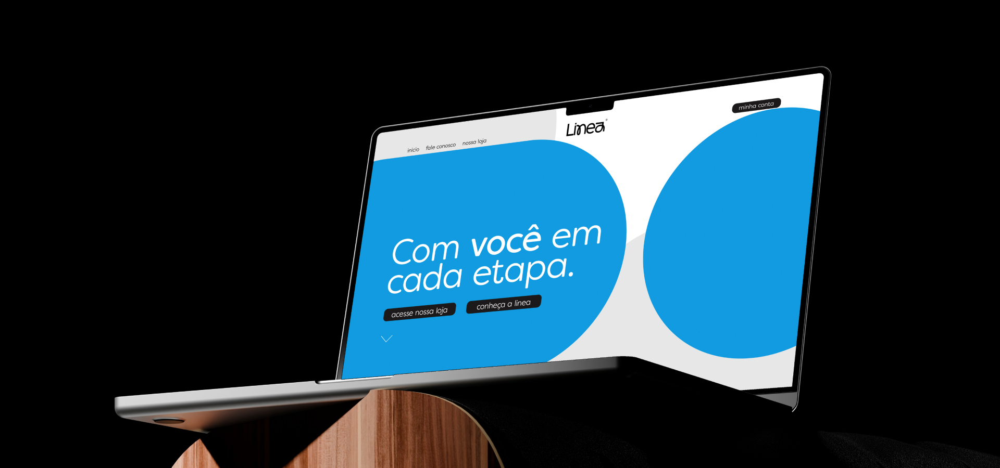

Vale a pena ter um site em 2026?
Vale. E, sendo bem honesto, vale mais hoje do que valia há alguns anos.
Tem o motivo óbvio: praticamente todo mundo dá uma pesquisada antes de comprar ou contratar. Mas tem um motivo que pouca gente comenta: ter um site virou praticamente requisito pra você verificar a sua empresa na Meta e rodar anúncios com segurança, sem viver com medo de perder a conta por um bloqueio do Facebook. Ou seja, o site deixou de ser só “vitrine bonita” e passou a fazer parte da infraestrutura do seu negócio.
Então quanto pagar por um site?
Aqui eu preciso te tirar de uma pergunta e te colocar em outra.
A pergunta certa é: qual é o retorno desse investimento?
E, pra te responder isso, eu preciso primeiro saber uma coisa sobre o seu negócio.
Qual é o objetivo do seu site?
Todo site cabe em um de três objetivos. Descobrir qual é o seu é justamente o que define quanto faz sentido investir:
- Passar credibilidade e profissionalismo pros seus possíveis clientes.
- Capturar contatos (leads) de interessados pro seu comercial trabalhar.
- Vender direto. O seu site é a sua loja.
Vou passar por cada um, acha o seu.
Caso 1 - Passar credibilidade
Esse é o objetivo mais simples, e por isso o retorno esperado é menor por natureza. Aqui a sua única preocupação real é o design: um site bonito, rápido e que funcione bem no celular. Isso um web designer júnior consegue entregar, e você acha profissionais cobrando por volta de mil reais, às vezes até menos, com gente menos experiente.
Mas tem um porém, e ele depende do seu mercado. Quanto mais o seu cliente associa a sua imagem à qualidade do seu serviço, mais perigoso é economizar aqui. Pensa num escritório de arquitetura: se o site é feio, o cliente assume que o trabalho também é. Isso acontece por causa do efeito halo, a gente julga o todo pela primeira impressão de uma parte. Site amador, empresa amadora, mesmo que o seu serviço seja excelente.
Se o que você oferece for bem simples, dá pra recorrer a uma plataforma de modelos prontos tipo Wix. Eu, sinceramente, não indico: o seu site já nasce limitado e não consegue evoluir depois. Mas entendo que, num momento de orçamento curto, pode quebrar o galho.
Caso 2 - Capturar contatos (leads)
O site não precisa só ser bonito, ele precisa converter, transformar visitante em contato no seu WhatsApp ou no seu comercial. E isso é trabalho de estratégia, não só de design.
Nesse caso o seu site precisa de:
- Copy que persuade, não só texto bonito. Cada seção tem que conduzir a pessoa até o botão de contato.
- Botão de WhatsApp ou formulário bem posicionado, fácil de achar em qualquer ponto da página.
- Integração com o seu comercial. O lead cai direto no WhatsApp, e-mail ou CRM sem você ter que ficar copiando contato à mão.
- Velocidade e SEO, porque não adianta converter bem se ninguém acha o seu site no Google.
- Muitas vezes, uma landing page focada em uma única ação, principalmente se você for rodar anúncios.
Por isso aqui um web designer júnior já não dá conta. Você precisa de alguém que entenda de conversão, não só de estética. É um investimento maior, geralmente na faixa de R$3000 a R$5.000, mas é o ponto em que o site deixa de ser cartão de visita e vira uma máquina de gerar oportunidade de venda. A conta é simples: se ele te trouxer alguns clientes a mais por mês, em quanto tempo ele se paga?
Caso 3 - Vender diretamente
Aqui o seu site é a sua loja. Ele recebe o pedido, o pagamento e cuida do estoque. Então, naturalmente, é o que exige mais tecnologia e o maior investimento dos três.
A primeira decisão é se você vai criar uma loja virtual própria ou plataforma pronta. Cada caminho tem seu custo e suas vantagens:
- Plataforma pronta (tipo Shopify, Nuvemshop): você sobe rápido e paga uma mensalidade, mas fica limitado ao que a plataforma permite. Se for por aí, dá uma olhada em Qual melhor plataforma para criar uma loja virtual em 2026.
- Loja sob medida: investimento inicial maior, mas liberdade total pra crescer e nenhuma mensalidade te prendendo.
Além da loja em si, entram custos que muita gente esquece: meio de pagamento, frete, segurança e a parte de trazer gente pra loja (anúncios e SEO) porque loja sem visita não vende. Aqui o investimento começa mais alto, mas o retorno é direto: cada real bem investido volta em venda.
Então, quanto custa?
Voltando ao começo: não existe um preço único, existe o preço do objetivo certo pro seu momento. Pagar pouco por um site que precisava vender é jogar dinheiro fora; pagar caro por um site que só precisava passar credibilidade também. O acerto é casar o investimento com o retorno que você espera dele.
Se você ainda não tem certeza de qual dos três casos é o seu, fale com a Yelloz que a gente te ajuda a descobrir antes de você gastar um real errado.
Vamos conversar?